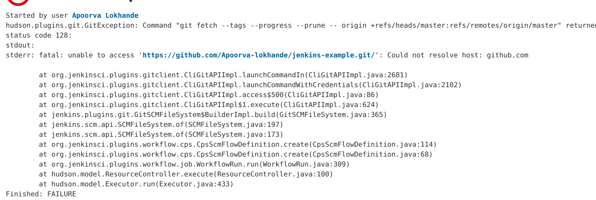

Software composition analysis
Objective
The aim of this section is to configure DVNA in a Production server as mentioned in the Problem Statement.
What is SCA
Software composition analysis (SCA) identifies all the open source in a codebase and maps that inventory to a list of current known vulnerabilities. It helps identify vulnerabilities in open source code (dependencies) used in code.
SCA is the process of automating the visibility into open source software (OSS) use for the purpose of risk management, security and license compliance. With the rise of open source (OS) use in software across all industries, the need to track components increases exponentially to protect companies from issues and open source vulnerabilities.
OWASP Depedency-Check
Dependency-Check is a Software Composition Analysis (SCA) tool that attempts to detect publicly disclosed vulnerabilities contained within a project’s dependencies. It does this by determining if there is a Common Platform Enumeration (CPE) identifier for a given dependency. If found, it will generate a report linking to the associated CVE entries.
Performing SCA in DVNA
I followed the official documentation in order to download the Dependency-Check CLI and the associated GPG signature file which is given below:
wget -P ~/ https://github.com/jeremylong/DependencyCheck/releases/download/v6.2.2/dependency-check-6.2.2-release.zip
wget -P ~/ https://github.com/jeremylong/DependencyCheck/releases/download/v6.2.2/dependency-check-6.2.2-release.zip.asc
Now, extract the files from dependency-check tool zip file:
unzip ~/dependency-check-6.2.2-release.zip
Perform the scan by specifying the path to the project, output report format and its location:
~/dependency-check/bin/dependency-check.sh --scan ~/app --out ~/report/dependency-check-report --format JSON --prettyPrint
SCA Pipeline
NOTE: While adding the script to the pipeline I got an error: 
It was an DNS error, I went ahead and resolved it by the folleing command in the <jenkins-home-dir>:
sudo dhclient enp0s3
Finally, I added the script to the jenkinsfile to perform SCA of DVNA:
stage ('OWASP Dependency-Check') {
steps {
sh '~/dependency-check/bin/dependency-check.sh --scan ~/app --out ~/reports/dependency-check-report --format JSON --prettyPrint || true'
}
}